第6回 制御構造 〜For each / IF / BLOCK ERROR / サブフロー〜
最終演習で必要となる4要素を一気に押さえる回です：①For each ②条件分岐 ③BLOCK/ON BLOCK ERROR＋エラーログ追記 ④サブフロー分割。
事前準備
- 第5回 のスクレイピングフローが手元にある
- 第4回のログインフローが手元にある
A. ループ処理
繰り返し処理の基本とデータテーブルとの組み合わせループ処理とは、同じ作業を何度も繰り返す仕組みのことです。たとえば「スタッフ100名分のプロフィールシートを1枚ずつ作る」という作業を、人が手で100回繰り返す代わりに、PAD が同じ手順を自動でぐるぐる繰り返してくれます。自動化が最も効果を発揮する場面のひとつです。
PAD のループには大きく分けて2種類あり、「決めた回数だけ繰り返す」タイプと、「リストや表の中身を1件ずつ処理する」タイプがあります。まずはこの2つの違いから押さえていきましょう。
A-1. Loop と For each の違い
| アクション | 使いどころ | 例 |
|---|---|---|
| Loop | 回数を指定して繰り返す | 「メッセージを10回表示する」 |
| For each | リストやデータテーブルの中身を1件ずつ処理する | 「スタッフ一覧の全員に対してプロフィールシートを作る」 |
A-2. For eachとデータテーブルの組み合わせ
スクレイピングで取得したスタッフ一覧（DataTable）を1行ずつ処理する典型パターンです。▼ For each が DataTable を上から1行ずつ処理する様子を確認してみましょう。
| ID | 氏名 | 部署 | 状態 |
|---|
URL 直接ナビゲート（第5回 C-3 で扱ったパターン）を使い、URL の
id=ST001 の部分を For each の現在の項目（変数）に置き換える、というのがポイントです。
-
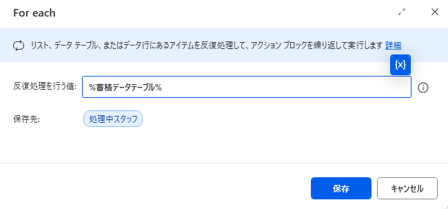
「For each」アクション設定画面（反復処理を行う値＝%蓄積テーブル%／保存先＝%処理中スタッフ%） For each アクションを置く アクションペインの「ループ」カテゴリから「For each」を配置し、設定画面で：- 反復処理を行う値：第5回で作った
%蓄積テーブル%を指定 - 保存先：
%処理中スタッフ%（1 行ずつここに入ってきます）
%処理中スタッフ%に入って、ループの中身が繰り返し実行されます。 - 反復処理を行う値：第5回で作った
-
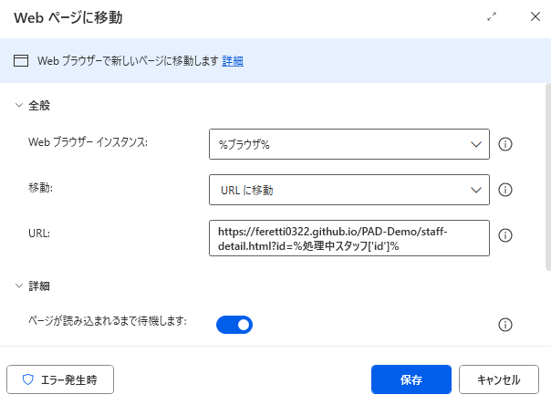
「Web ページに移動する」アクション設定画面（URL に %処理中スタッフ['id']%を埋め込んでいる様子）「Web ページに移動する」を For each の中に置き、ID を URL に埋め込む%処理中スタッフ%は 1 行ぶんのデータです。その中から 「id」列（例：ST001）だけを取り出すには 列名で指定します（蓄積テーブルの列名は小文字のidなので →%処理中スタッフ['id']%）。
For each のループの内側に「Web ページに移動する」アクションを追加し、URL 欄に下記を入力します：https://feretti0322.github.io/PAD-Demo/staff-detail.html?id=%処理中スタッフ['id']%固定部分の URL に、For each で取り出した ID 変数を埋め込むかたちです。実行すると、ループの周回ごとに?id=ST001→?id=ST002→ … と URL が動的に変わって、各スタッフの詳細ページが次々と開きます。 -
実行して確認 フローを実行（▷）すると、4-A で立ち上げた Chrome の中で staff-detail.html?id=… が周回ごとに切り替わり、全スタッフの詳細ページを順番に開いていけば成功です。
B. 条件分岐（IF / Switch）
If / ElseIf / Else の使い方と Switch の使いどころB-1. 条件分岐とは？
条件分岐とは、「ある条件を満たすかどうか」で、その後の処理を変える仕組みのことです。人が仕事をするときも、わたしたちは無意識に条件で動きを変えています。
- 「在庫があれば出荷する、なければ取り寄せる」
- 「勤続10年以上ならベテラン名簿に入れる、そうでなければ入れない」
- 「営業部の人だけこの資料を作る」
この「〇〇だったら△△する」という判断を、PAD にそのまま指示できるのが条件分岐アクションです。代表的なものが IF（イフ）で、もうひとつ Switch（スイッチ）というアクションもあります。まずは一番よく使う IF から見ていきましょう。
B-2. IF の使いどころ
IF でまず覚えてほしいのは、分かれ道は「2つ」しかないということです。条件に対して、答えは 「そうなのか（YES）」 か 「そうじゃないのか（NO）」 の二択。この2つのどちらかに必ず入ります。
IF を組むときには IF THEN ELSE END という英単語が出てきます。それぞれの意味は次のとおりです。難しく考えず、日本語に置き換えて読んでみてください。
| キーワード | 意味 | 読み下し |
|---|---|---|
IF | もし〜なら | 「もし 部署が営業部 だったら」 |
THEN | そのとき（YES の処理） | 「そのとき、これをやる」 |
ELSE | そうでなければ（NO の処理） | 「営業部じゃなかったら、こっちをやる」 |
END | 分岐の終わり | 「ここで分岐はおしまい」 |
ELSE とは？ 「そうでなければ」という意味で、条件を満たさなかった（NO）ときの処理を書く場所です。PAD では「If」「Else」「End」の3つのアクションを組み合わせて、この YES / NO の分かれ道を作ります。なお、NO のときは何もしないのであれば
ELSE は省略してよく、その場合は IF 〜 THEN 〜 END だけのシンプルな形になります（このあとのハンズオン課題②がこの形です）。
条件は必ず 「成り立つ / 成り立たない」の YES・NO で答えられる形にします。営業部かどうか・10年以上かどうか・空っぽかどうか のように、〇か×かで判定できるものを書くのがコツです。
条件で使う演算子（= 等しい／<> 等しくない／> < >= <= など）は、設定画面のプルダウンリストから選びます。たとえば「営業部かどうか」を判定するなら、最初のオペランドに %処理中スタッフ['部署']%、演算子は と等しい (=)、2 番目のオペランドに 営業部 を指定します。
-
課題①のフローを開く ハンズオン課題①で作った、For each の中に「Web ページに移動する」が入っているフローをそのまま使います。いまは 全スタッフの詳細ページに飛ぶ状態です。これを「営業部だけ」に絞り込みます。
-
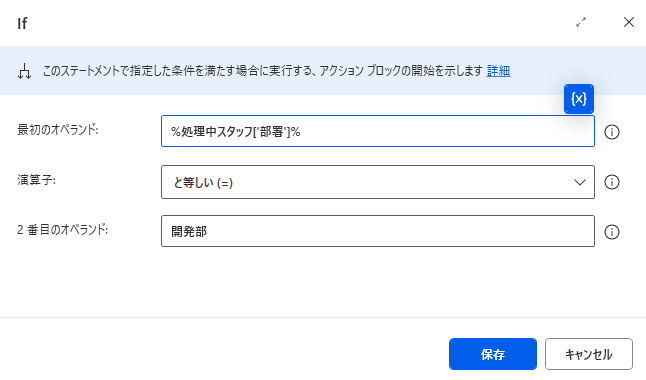
For each の中に「If」アクションを置く アクションペインの「条件」カテゴリから「If」を、For each の内側・「Web ページに移動する」のすぐ上にドラッグして配置します。設定画面で次のように指定します：- 最初のオペランド：
%処理中スタッフ['部署']% - 演算子：
と等しい (=) - 2 番目のオペランド：
営業部
⚠️ 列名に注意： id が小文字だったように、抽出後の蓄積テーブルの列名は実物を確認してください。部署の列名が部署でなければ、その名前に合わせます（列番号%処理中スタッフ[2]%で指定しても OK）。 - 最初のオペランド：
-
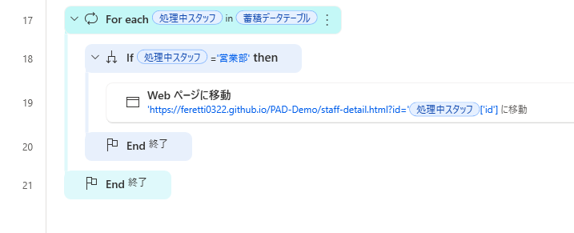
「Web ページに移動する」を If と End の間に入れる 課題①で作った「Web ページに移動する」を、「If」と「End」で挟まれた内側に移動させます。これで 部署が営業部のとき（YES）だけ詳細ページに飛び、それ以外（NO）は何もせず次のスタッフへ進むようになります。 -
実行して確認 フローを実行（▷）すると、ループは全員を回りますが、詳細ページが開くのは営業部のスタッフのときだけになっていれば成功です。営業部以外のときは
Ifの中をスキップして、そのまま次の人に進みます。
B-3. Switch の使いどころ（インタラクティブデモ付き）
IF が「YES / NO の二択」だったのに対して、Switch は 1つの変数の中身を見て、いくつもの行き先に振り分ける仕組みです。「部署が営業部なら A、総務部なら B、開発部なら C…」のように、選択肢が3つ以上あるときに IF をいくつも重ねるよりスッキリ書けます。ただし PAD の Switch は完全一致のみ対応のため、「以上・以下」のような範囲比較は IF を使ってください。
Switch は Switch Case Default Case という3つのアクションを組み合わせて作ります。それぞれの意味は次のとおりです。
| アクション | 意味 | 読み下し |
|---|---|---|
Switch | 何を見て振り分けるか（対象の変数）を決める | 「部署 を見て振り分けます」 |
Case | 「その値だったら」という行き先。値の数だけ並べる | 「営業部 だったら、これをやる」 |
Default Case | どの Case にも当てはまらなかったときの処理（IF の ELSE にあたる。省略可） | 「どれでもなければ、これをやる」 |
Case は「特定の値に一致したとき」だけ実行されます。一致する Case がいくつあってもよく、値の種類だけ並べます。一方 Default Case はそのどれにも一致しなかったときの受け皿で、IF でいう ELSE と同じ役割です。想定外の値が来たときの保険になるので、置いておくと安心です（不要なら省略も可）。
下のデモで、部署を選ぶと Switch のどの Case に一致するかがコード上でハイライトされます。実際の動きを確かめてみましょう。
C. エラー処理（BLOCK ERROR ＋ ログ追記）
例外をどう扱うか、個別スキップ vs 全体中断、ログ書き出しC-1. エラー（例外処理）の基本
PAD では、エラーが発生したときのエラー発生時の挙動をあらかじめ設定しておけます。設定方法は2つ：
- 各アクション個別に設定：アクションをダブルクリック →「エラー発生時」
- 「ブロックエラー発生時」：For each ループなど複数アクションをまとめて管理（おすすめ）
どちらでも、発生時の挙動を以下から選びます：
- 新しいルールを追加 → サブフローへ：エラー時に独自のリカバリ処理を呼び出す
- フローを停止：そこで全体中断（既定）
- 次の繰り返しに移動：ループ内で個別スキップ
- ブロックの末尾へ：エラーをなかったことにして続行
C-2. 「全体中断 vs 個別スキップ」の使い分け（最重要）
| 場面 | 設定 | 理由 |
|---|---|---|
| ログインに失敗した場合 | フロー全体を中断 | ログインできなければ以降の全処理が無意味になるため |
| 700名処理中に1名だけページが取れなかった | 次の繰り返しに移る | 残り699名分の処理を続けるべき。その1名はログに記録 |
C-3. インタラクティブデモ：エラー動作シミュレーター
5名分のスタッフを処理します。3件目（ST003）は必ずエラーを起こす設定です。「全体中断モード」と「個別スキップモード」で結果がどう変わるか見てみましょう。
C-4. エラーログの記録（テキストをファイルに書き込む・追記モード）
スキップしたスタッフの ID や発生時刻をテキストファイルに追記しておくと、後から「何件成功・何件失敗」が一目でわかります。エラー処理専用のサブフローを用意しておき、ブロックエラー発生時にそのサブフローを呼び出すのが定番です。
-
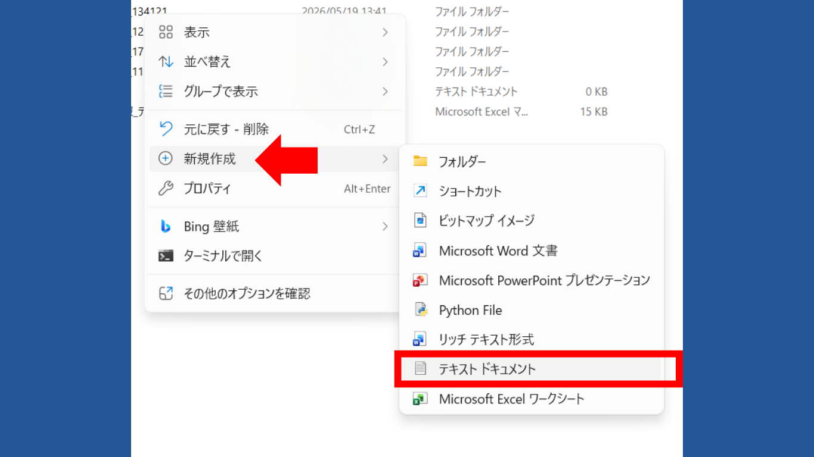
書き込み先のテキストファイルを先に作っておく まず、エラーを書き込む空のテキストファイルを用意します。エクスプローラー上で右クリック → 新規作成 → テキスト ドキュメントを選び、名前をわかりやすく 「エラーログ」（エラーログ.txt）などに変えておきます。
このファイルのパスを、後の「テキストをファイルに書き込む」アクションで指定します。 -
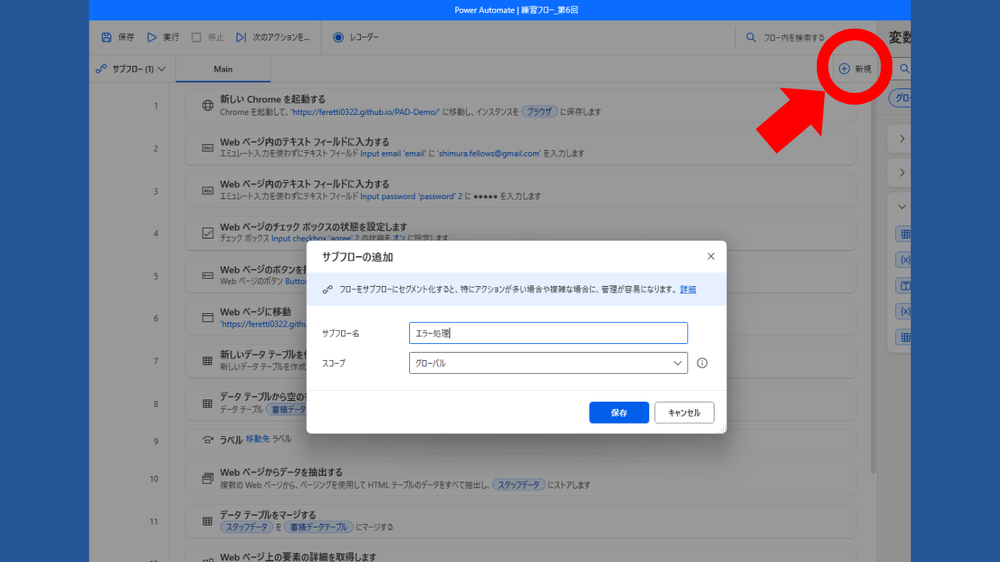
エラーログ書き込み用のサブフローを作る フローデザイナー上部の「サブフロー」から新しいサブフローを追加します。名前は 「エラー処理」がおすすめです（後で呼び出すときに分かりやすい名前にしておきます）。 -
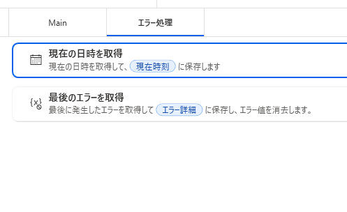
サブフロー内で「現在の日時を取得 → 最後のエラーを取得」 「エラー処理」サブフローの中に、次の2つのアクションを並べて、ログに使う値を変数に取っておきます。- 現在の日時を取得（いつ失敗したか）→ 生成変数
現在時刻 - 最後のエラーを取得（何が起きたか）→ 生成変数
エラー詳細
- 現在の日時を取得（いつ失敗したか）→ 生成変数
-
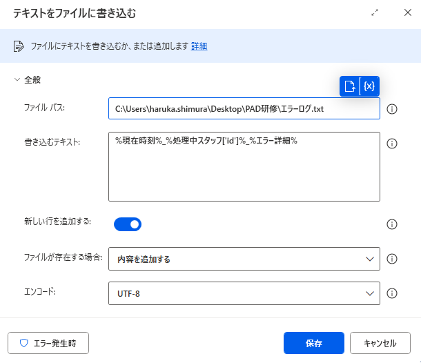
「テキストをファイルに書き込む」を追記モードで設定する 続けて「テキストをファイルに書き込む」アクションを追加します。書き込み先のファイルには手順1で作ったエラーログ.txtを指定し、書き込む内容には下記を入れます。 「いつ・どのスタッフで・何のエラーが起きたか」が1行にまとまるので、後から原因をたどりやすくなります。⚠️ 「内容を追加する」（追記モード）を必ず選ぶ： 「ファイルが存在する場合」を必ず「内容を追加する」にします。上書きにすると前のログが毎回消えてしまうので注意。エンコードは UTF-8、改行を付けておくと1件1行で読みやすくなります。 -
Main フローに戻り、For each の直前に「ブロックエラー発生時」を置く ここからは Main フローでの作業です。アクションペインから「ブロックエラー発生時」を、For each のすぐ上（直前）にドラッグして配置します。まずは空のブロックを置くだけで OK です。
-
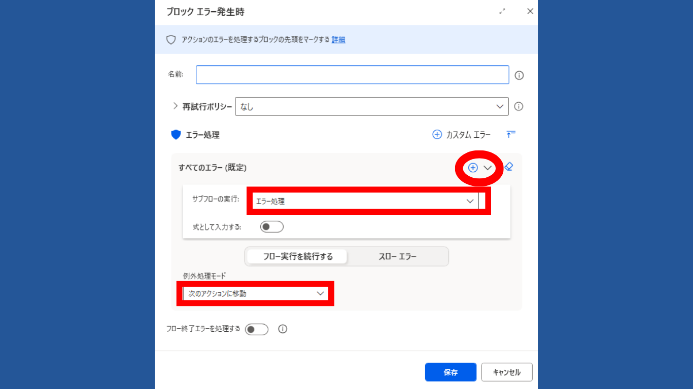
「ブロックエラー発生時」の中身を設定して、一旦保存する 置いた「ブロックエラー発生時」をダブルクリックして詳細を設定します。- 新しいルールを追加 → サブフローへ を選び、先ほど作った「エラー処理」サブフローを指定
- あわせて 「次の繰り返しに移動」 も設定（エラーが出たスタッフはスキップして次の人へ進む）
-
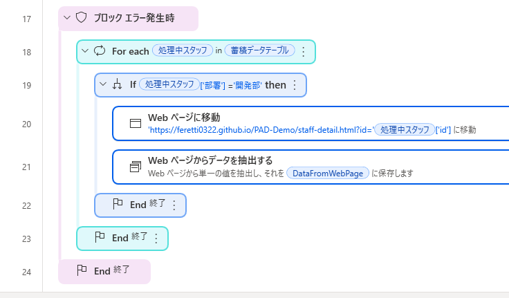
For each を「ブロックエラー発生時」の中にドラッグして入れる 最後に、For each のかたまり全体を選択します。先頭の行をクリックしたあと、Shift キーを押しながら最後の行をクリックすると、その間のアクションをまとめて複数選択できます。選択できたら、いま設定した「ブロックエラー発生時」の中（ブロックの内側）へドラッグして移動させます。これで「For each の処理中にエラーが出たら、エラー処理サブフローが呼ばれてログに記録 → 次のスタッフへ」という流れが完成します。
- 課題②のフローの IF 条件を 「営業部」→「開発部」に変える
- 「Web ページに移動する」のすぐ下（同じ If の中）に、「要素取得」アクションを1つ追加する（例：「Web ページからデータを抽出する」や「Web ページ上の要素の詳細を取得する」で、氏名などスタッフ情報の要素を取得）。
- 実行する。開発部には詳細ページが「スタッフが見つかりません」になるスタッフ（松本 理恵さん）がいて、そのページには取得対象の要素が無いため「要素取得」がエラーになります。
- このとき「エラー処理」サブフローが発動し、
エラーログ.txtに1行追記されるかを確認。エラーが出ても処理が止まらず、次のスタッフに進めば成功です。
D. サブフロー
処理を機能単位で切り出して Main＋サブフローの 4 本構成にするD-1. サブフロー 〜「使い回せる処理のかたまり」〜
サブフローとは、いくつかのアクションを1つのまとまり（部品）にして名前を付けたものです。料理でいう「下ごしらえ済みの常備菜」のようなイメージで、使いたいときに名前を呼ぶだけで、その中の処理がまとめて実行されます。
長いフローを1本にベタ書きすると、何をしているか分かりにくく、同じ処理を何度も書くハメになります。「ログイン」「スタッフ情報の取得」「エラー処理」のように役割ごとにサブフローへ切り出すと、Main フローは「サブフローを順番に呼ぶだけ」のスッキリした形になり、見通しと修正のしやすさが一気に上がります。
| 比較軸 | サブフローなし | サブフローあり |
|---|---|---|
| メインフローの行数 | 長くなる | コンパクトに収まる |
| 処理の見通し | 何をしているか分かりにくい | 「ログイン → 取得 → 出力」と一目でわかる |
| 修正コスト | ログイン処理を3か所直す必要がある | サブフロー1か所を直すだけ |
| 再利用 | コピー&ペーストで増殖する | 呼び出すだけ |
たとえば今回の演習で組んだフローも、役割ごとに複数のサブフローへ分けて整理できます。下の画面は 「ログイン処理」「データ抽出」「スタッフ詳細ページ表示」「エラー処理」 の4本のサブフローが並んでいる例です。
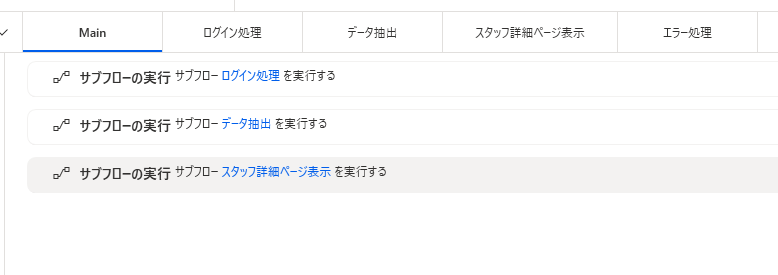
- ログイン処理：Chrome 起動 → メール・パスワード入力 → ログインボタン
- データ抽出：一覧ページのスクレイピング（ページング走破）
- スタッフ詳細ページ表示：For each → 詳細ページに移動 → 要素取得
- エラー処理：C-4 で作った、エラーログを追記するサブフロー
解答例 / 完成フローテキスト
本回のハンズオン課題の完成フローテキストをダウンロードして、PAD 編集画面に貼り付けてください。
⬇️ lesson-6.txt をダウンロード